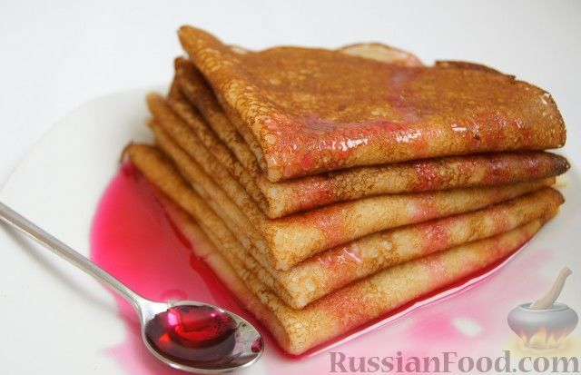

Блины классические

Ну как же без них, без блинов? Никак. Блины - классическая выпечка на сковороде.
Я долго не могла подобрать идеальный рецепт блинов (на воде жестковаты, на кефире сложноваты и т. д.),
такой, чтобы блины были тонкими, мягкими и просто готовились.
Продукты
- Молоко - 400 мл
- Вода - 150 мл
- Яйца - 2 шт.
- Сахар - 2-3 ст. ложки
- Соль - 0,25 ч. ложки
- Мука - 200 г (1+1/3 стакана объемом 250 мл)
- Масло растительное - 2 ст. ложки
- Масло сливочное для смазывания - 50 г
Приготовление
В миску влить молоко и воду, всыпать сахар, соль, хорошо размешать.
Добавить яйца, тщательно взбить венчиком.
Постепенно всыпать просеянную муку, постоянно взбивая, мука должна полностью вмешаться, без комочков.
В конце влить растительное масло, перемешать. Тесто получится как очень жидкая сметана.
Сковороду, желательно с толстым дном, хорошо разогреть. Половником набираем тесто (примерно 1/3 половника), выливаем на сковородку и, вращая сковороду,
круговыми движениями распределяем равномерно тесто. Жарить около 15 секунд, до золотистых краёв.
Поддеть край блинчика ножом или силиконовой лопаткой и перевернуть (я переворачиваю руками, это совсем не страшно и не горячо).
Обжарить со второй стороны и, так же поддев краешек, снять со сковороды.
Горячий блин смазать сливочным маслом. Жарим блины из всего теста и складываем стопочкой.
Подать можно с любым сиропом, сгущенным молоком, растопленным шоколадом и с чем позволит ваша фантазия.
Приятного аппетита!